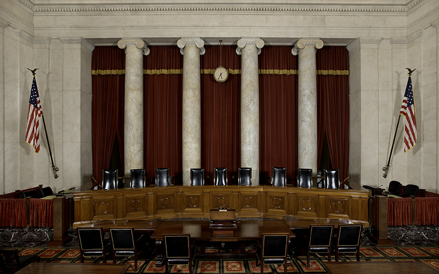
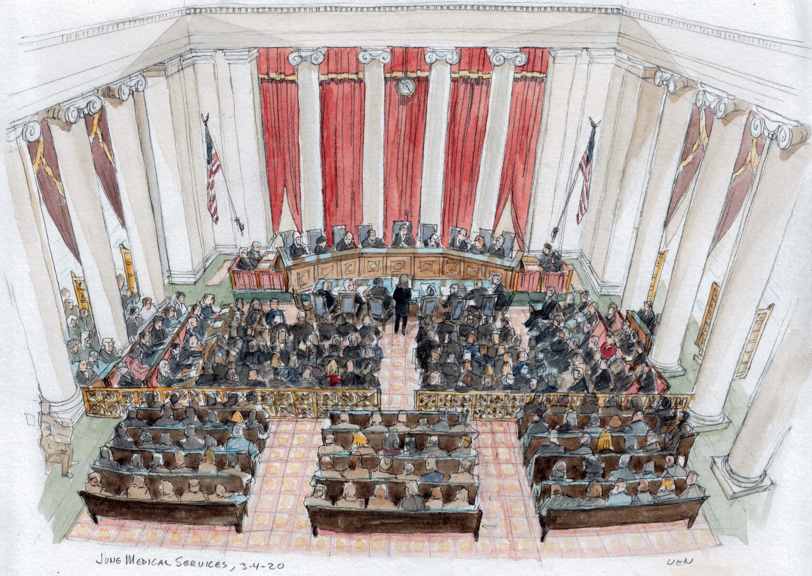

Courtroom of the U.S Supreme Court
The Supreme Court Building, majestic in size and rich in ornamentation, serves as both home to the nation’s highest Court and the manifest symbol of its importance as a coequal, independent branch of government. The Supreme Court Building is open to the public Monday – Friday from 9:00 a.m. to 4:30 p.m. It is closed on weekends and all federal holidays.
In addition to the Courtroom, portions of the first and ground floors of the Supreme Court Building are open to the public. Visitors should be aware that the business of the Court may from time to time affect public access to the building or alter programming offered. Please check Today at the Court on the homepage for the Court's daily calendar.


First and ground floor of U.S Supreme Court
Supreme Court Overview
Home